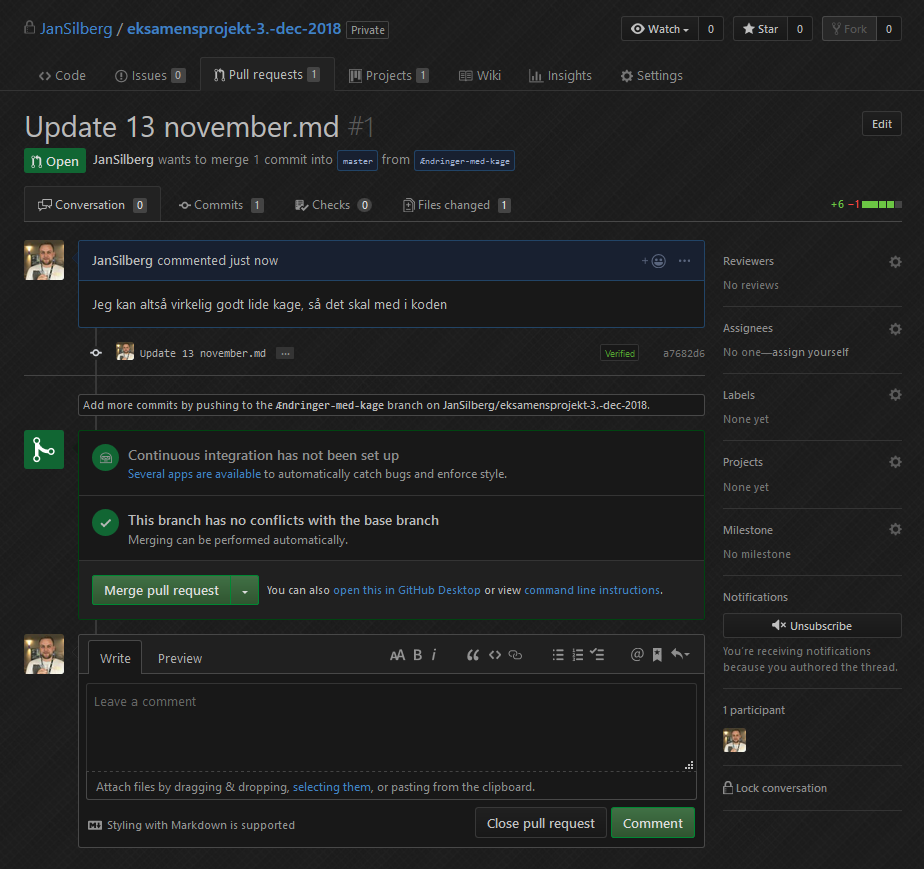
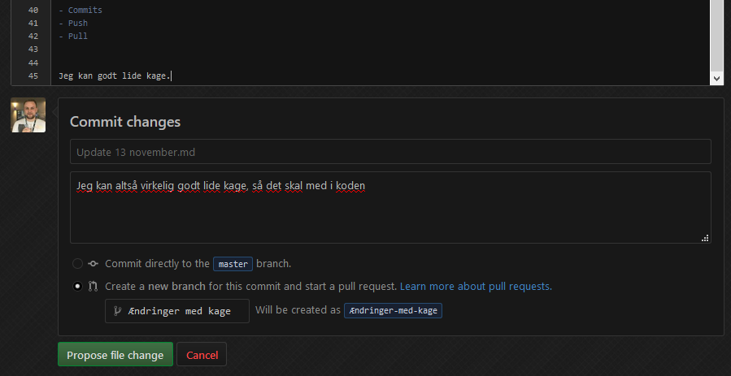
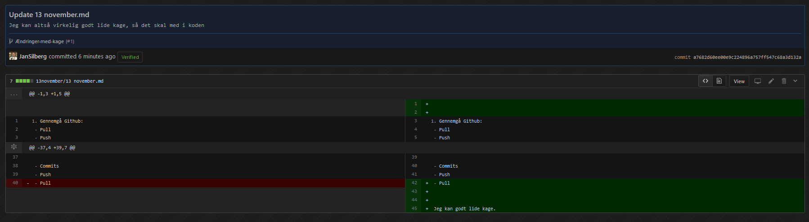
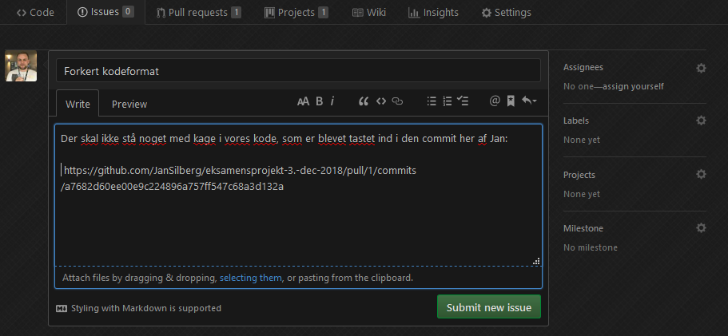
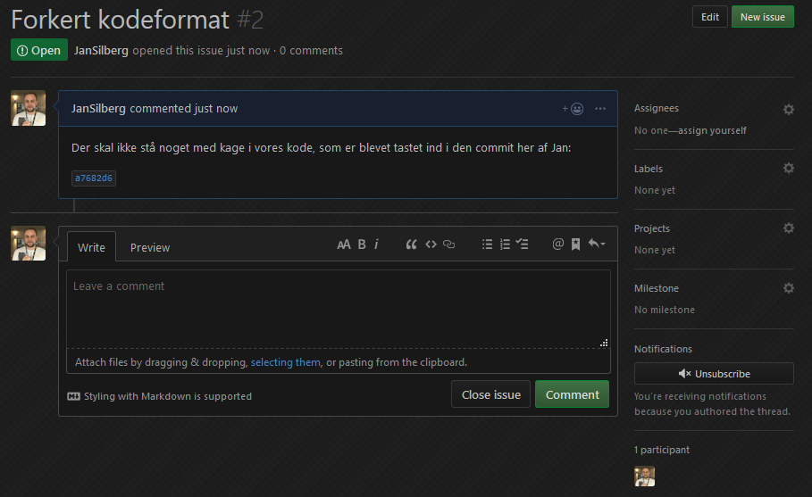
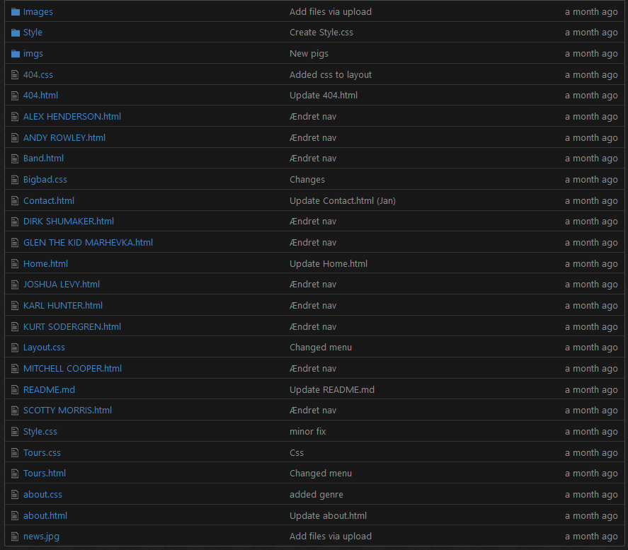
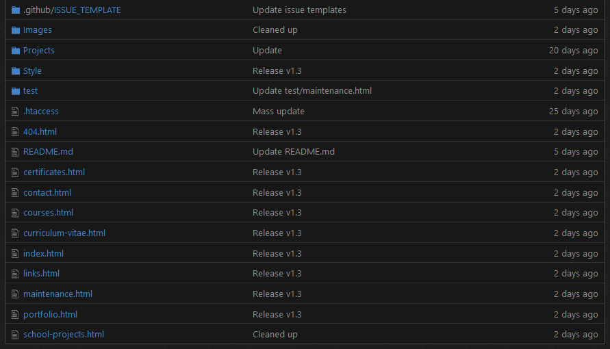
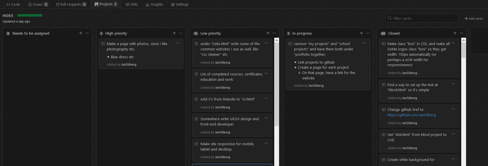

Pull
Når man "puller" så hiver man data ned fra det remote repository man har.
Det vil sige, at det er det repository, som ligger online (i browseren).

Formålet er at forstå de forskellige begreber, og vide hvad de gør.
Når man "puller" så hiver man data ned fra det remote repository man har.
Det vil sige, at det er det repository, som ligger online (i browseren).
Når man "pusher" så skubber man data ud til det remote repository man har.
Det vil sige, at de ændringer man har foretaget skubber man ud til serveren.
Når man "committer" så accepterer man de ændringer, som man selv har lavet.
Det vil sige, at når man har lavet ændringer enten online eller lokalt, så skal man acceptere de ændringer før, at de ændringer kan pushes.
En branch er en gren, som "stikker ud" fra ens oprindelige version af filerne.

En pull-request er en anmodning om, at få lov at ændre i de data, som allerede findes.
 Når man "merger" så sammenflætter man eksisterende data med ny data.
En issue er, når der er et problem med koden eller andet indhold.
Man vil typisk lave en issue, hvis noget kode ikke passer sammen, eller noget ser helt forkert ud på siden.
 Det er vigtigt at overholde en struktureret mappestruktur, så man nemt kan finde sit indhold.
 Projects tabben (Scrum boardet) virker på samme måde som Trello.
En fordel er, at når man laver Issues og Pull-requests, så kan man automatisere sit scrum board sådan, at de automatisk bliver sat der ind.
